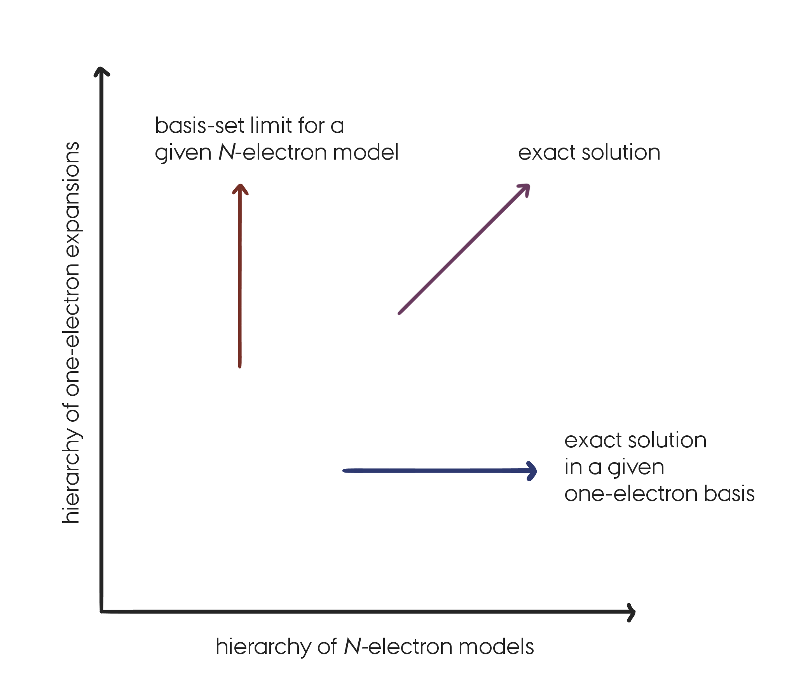

Coupled cluster#
Recap#
We are interested in the (ground-state) solutions of the molecular electronic Schrödinger equation (i.e. under the Born–Oppenheimer approximation).
So far we have seen:
Hartree–Fock (HF): A mean-field approximation in which the wave-function is written as a single Slater determinant. The molecular orbitals (MO) used in the HF wave-function are expressed as a linear combination of basis functions (usually atomic orbitals). The coefficients of the MO expansion are obtained variationally and are the only wave-function parameters.
Full Configuration Interaction (FCI): The exact solution to the electronic Schrödinger equation in a given one-electron basis. The FCI wave-function is expressed as a linear combination of all possible Slater determinant. The coefficients of the FCI expansion are obtained variationally and are the only wave-function parameters.
Truncated CI and Møller–Plesset (MP) theory: Post HF models providing intermediate results between HF and FCI (compromise between accuracy and computational cost).
More things that are not really relevant here…
In the wave-function based models described above and in Coupled Cluster (CC) theory as well, we make approximations of two different kinds:
In the one-electron space (choice of a finite basis set).
In the N-electron space (choice of a wave-function model).
In this lecture we are only concerned with the approximations introduced in the N-electron space. We will therefore always consider solutions to the electronic Schrödinger equation for a particular choice of one-electron basis set, keeping in mind that for approaching the exact solution it is important to make improvement in both spaces. A FCI solution for a minimal basis set is not very useful in practice…

The systematic approach to the exact solution of the Schrödinger equation by successive improvements in the one- and N-electron spaces. (Replicated from Figure 5.1 in .
What is Coupled Cluster Theory?#
Coupled Cluster Theory corresponds to a set of models that, similarly to truncated CI and MP theory, have been designed as post-HF methods targeting the FCI solution to the electronic Schrödinger equation.
The goal of CC is thus to recover the correlation energy, defined as the difference between the FCI and the HF energy in a given basis set. And to do that as efficiently as possible, i.e., to recover most of the correlation energy at the minimum computational cost.
CC theory is often preferred over the CI and MP methods for the two following reasons:
It is size-extensive (we will clarify that point in the next section),
and it provides fast and systematic convergence to the FCI solutions.
Perturbation models like MP theory often have convergence troubles, and, as we will see in the next section, truncated CI methods do not provide size-extensive energies.
However, these properties of CC theory come at the expense of a variational formulation. So in standard CC theory, the CC energy is not variational. Another major issue for CC theory is its high computational cost and in particular the scaling of the cost with the size of the system.
Size-consistency, size-extensivity, and strict separability#
Those three concepts are used to qualify and differentiate quantum chemistry models from one another. A lot of confusion exists in the literature and it is thus important to explain what is meant when using those words.
Size-consistency#
The first concept, that we will refer to as size-consistency, has to do with the ability of a model to properly describe the entire potential energy surface of a system. For example at the equilibrium geometry but also when all the elements are far apart as well as the intermediate regions (bond-breaking processes). The size-consistency concept (as defined here) is thus more of a system dependent problem than a property of an approximate quantum chemistry model. Of course the FCI solutions are always size-consistent. However, HF is not always size-consistent (e.g. hydrogen dissociation) and thus all approximate post-HF methods will inherit from this issue. When HF is failing, one should instead consider multi-configuration and multi-reference methods to provide a size-consistent description of the system under consideration.
Note
Unfortunately, the term size-consistent is also often used to describe the concept explained below (size-extensivity, and strict separability) which are related but fundamentally different. This leads to a lot of confusion…
Size-extensivity#
This term was introduced in analogy to size-extensive properties in thermodynamics. A quantum chemistry model (like CC, and FCI) should provide size-extensive energies in the sense that the energy should grow linearly with the number of electrons in the system.
Strict separability#
This is the easiest concept to define clearly and the one we are really interested in here.
The idea is that if a system is composed of non-interacting fragments A and B, such that
and such that we can split the Hamiltonian of the total system as
then, a wave-function model that is strictly separable will fulfill the following conditions on the resulting wave-function and energy.
The key here is to understand that when talking about non-interacting system we mean that the total Hamiltonian can be decomposed into the sum of the Hamiltonian of the fragments.
Warning
If one is to compute the CC energy of, e.g., a water molecule for a very large H–O bond length (e.g. 20 Angstroms), the relation above does not hold unless we specify excplicitly to the computer program that the Hamiltonian should be written as two independent contributions. Otherwise, the CC energy of the total system will suffer from the lack of size-consistency of the HF solution. CC energies are therefore not always size-consistent (as defined above).
The size-extensivity and strict separability properties described here are mathematical properties and one should be careful when testing those properties numerically.
Why do we want size-extensivity?#
So why is it important for a good quantum chemistry model to satisfy the strict separability and the size-extensivity conditions above?
The first and most important reason is that those properties are properties of the exact solution to the electronic Schrödinger equation. For the other reasons, I cannot put it better than that:
An important advantage of a size-extensive method is that it allows straightforward comparisons between calculations involving variable numbers of electrons, e.g. ionization processes or calculations using different numbers of active electrons. Lack of size-extensivity implies that errors from the exact energy increase as more electrons enter the calculation. From Size-Extensivity and Size-Consistency (1996) by T. Daniel Crawford.
One of the main troubles of truncated CI models is that they do not satisfy the
strict separability and size-extensivity properties. On the other hand, truncated
CC methods do satisfy those properties.
In the appendix :ref:appendix_h2_dimer we propose an illustration of the
strict separability problem for a dimer of hydrogen in a minimal basis.
Note
HF and MP theories also satisfy the strict separability and size-extensivity requirements.
The Coupled Cluster equations#
The exponential ansatz#
The size-extensivity problem of truncated CI methods can be linked to the
linear parametrization of the CI wave-function.
The CC wave-function, on the other hand relies on a exponential
parametrization, which introduces the non-linearity required to have
size-extensive energies (see appendix :ref:appendix_h2_dimer).
The CC wave-function is usually written as
where the cluster operator \(\hat{T}\) is given by
\(N\) is the total number of electrons and each cluster operator \(\hat{T}_{\mu}\) produces all the determinants that differ in orbital occupation by \(\mu\) electrons with respect to a reference determinant (e.g. HF). We refer to this process as (virtual) excitations since it excites or promotes \(\mu\) electrons from spin-orbitals that are occupied (\(i, j...\)) in the reference determinant to virtual (unoccupied) spin-orbitals (\(a, b...\)). For example, the singles and doubles operators acting on a reference determinant lead to
where the \(t\) coefficients are usually called the CC amplitudes and are the equivalent of the expansion coefficients of the CI wave-function, i.e., they are the CC wave-function parameters.
Note
The mathematical formalism behind the (virtual) excitation processes is called second-quantization. It is at the basis of quantum field theory and extensively used in the development of CC theory. For more details on the usage of second-quantization in quantum chemistry, see
The CC exponential ansatz can then be expanded explicitly
This expansion reveals the non-linearity of the parametrization. We see for examples that even if the cluster operator is truncated to include only double excitations, higher excitation will remain in the expansion through the non-linear terms like \(\hat{T}_2 \hat{T}_2\) which correspond to a quadruple excitation.
In CC theory, those terms are the key to size-extensivity. They are also responsible for the fast convergence of CC models to the FCI limit, since for an equivalent number of parameters (e.g. between truncated CI and CC) the CC expansion will include higher excitations indirectly through those non-linear terms.
The CC Schrödinger equation#
Now that we have seen the expression of the CC wave-function we can insert it into the electronic Schrödinger equation to determine the CC ground-state energy.
For reasons that we will not get into here, it is not possible to have an efficient formulation of CC theory by relying on the variational principle to minimize the energy. Instead, the CC Schrödinger equation is projected against the reference state \(\Phi_0\). It is also common to work with a similarity transformed Hamiltonian,
which can be shown to preserve the eigenvalue spectrum of the original Hamiltonian but it is not a Hermitian operator anymore. We now have
Projection against the reference determinant leads to the CC energy,
or more explicitly
By expanding the exponentials and using the algebra of the second-quantization operators (hidden in the cluster operators), one arrives at the following explicit expression
where \(E_0\) is the energy corresponding to the reference wave-function \(\Phi_0\). When the reference wave-function is the HF determinant the expression for the CC energy simplifies to
due to Brillouin’s theorem.
The CC amplitudes#
From the last equation we see that the CC energy if (of course) depending on the CC wave-function parameters (the amplitudes). As stated previously these are not obtained variationally but by projection techniques. To determine the amplitudes we project the CC Schrödinger equation against the set of excited determinants (up to the truncation level), i.e., for a coupled cluster with single and double excitations (CCSD) we have to solve the following non-linear equations
For higher truncation levels we need to project over excited determinants of higher excitation ranks. Note that the right-hand-side of the equation is zero due to orthogonality between the reference determinant and any excited determinant.
The left-hand-side of the equation can be derived into more explicit expressions, i.e, in terms of amplitudes and integrals (like the final expression for the energy) which can be implemented into computer programs.
The CC amplitude equations form a set of non-linear equations which have to be solved iteratively before the CC energy can be calculated.
Note
The equations presented here correspond to standard CC theory for which the reference wave-function must be a single slater determinant. In general this determinant is chosen to be the HF wave-function.
CC models and comments#
Standard CC models#
With the equations that we have presented in the previous section, the standard models of CC theory can be easily defined. Basically a given CC model is defined by the truncation level of the cluster operator (a bit like in the CI models). If only single excitations are included, \(\hat{T} = \hat{T}_1\), the CC energy is equal to the HF energy and this model, denoted CCS, is not relevant here (it can however be used to calculate excited state properties). The next model is the most common in the standard CC hierarchy. It includes single and double excitations and it is denoted CCSD.
As you can imagine, the next steps consist in including triples, CCSDT, and quadruples, CCSDTQ, etc. This allows for a systematic convergence to the FCI solution which is the main selling point of CC theory (together with the size-extensivity property described before).
Computational cost#
However, as we get closer to the FCI solution, the computational cost of solving the CC amplitude equations increases drastically. In particular the scaling of the method with the size of the system, N, goes as follows ,
CCSD already scales as \(N^6\),
CCSDT scales as \(N^8\),
and CCSDTQ as \(N^{10}\)…
To be more concrete, if it takes 1 minute to perform a CCSD calculation on 1 water molecule, it would take 120 years to perform the same calculation on a cluster of 20 water molecules.
A lot of work has been done (and is still going on) to lower the computational cost of CC models and to develop intermediates in the CC hierarchy.
One particularly popular and successful method is the CCSD(T) model in which, a standard CCSD calculation is performed and corrected by the effect of triples which are included in a perturbative manner (i.e., by relying on arguments from many-body perturbation theory). This method scales as \(N^7\) with the system size but recover most of the effects of a full CCSDT calculation. Due to the success of the CCSD(T) model, it is often described as the gold-standard of quantum chemistry.
What is CC theory used for?#
As we have seen CC theory has the following properties:
Fast and systematic convergence to the FCI solutions.
Size-extensivity of the energy, (wave-function and energy strictly separable).
Fast increase of the computational scaling with the truncation level, i.e., high computational cost.
Single-reference method. CC cannot be applied when more than one electronic configuration is important to describe a system, e.g. when breaking bonds. In other words, the (HF) reference needs to provide a qualitatively good description of the system under consideration.
So what can it be used for?
The ground-state CC theory that has been introduced here can be used to calculate very accurate ground-state energies of small molecules near their equilibrium geometry.
In addition molecular properties (dipole moments, polarizabilities…) and excitation energies can be calculated by combining CC theory with response theory (see also the equation-of-motion EOM-CC methods).
Being able to calculate energies and properties accurately and with a systematic convergence to the FCI solutions makes it possible to benchmark more affordable models (like DFT) that can be applied to larger molecules.
It should also be mentioned that since the late 90s, a lot of effort has been put in the development of more affordable CC models and a lot of progress has been made.